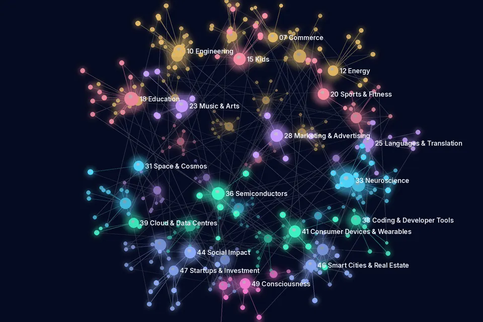

Journal of the AI Universe ✦ Research Papers Today
Research Papers Today
15 November 2026 · 909 new AI research papers in 45 of the 50 categories · Curated by Dr.P.R.K.Varma
841 peer-reviewed papers and 68 preprints, compiled automatically from medRxiv, bioRxiv, PubMed, Crossref, OpenAlex, preprint servers via Crossref (Research Square, Preprints.org, SSRN and others), europepmc, s2. Each line gives the title (linked), authors, venue, date, evidence label and identifier. Abstracts and figures are not reproduced: open the paper to read it. A listing is not an endorsement, and preprints have not been peer-reviewed. Health papers are not medical advice.
Research map in 3D
15 November 2026: the top 315 papers in 45 categories as a 3D network. Large points are categories, small points are papers (brighter = peer-reviewed), and faint lines join papers in different categories that share a topic word in their titles. Drag to rotate, pinch or use + and − to zoom, and tap a paper to open the original. Titles and links only.

Papers per category (45 categories)
01–14 Industries & Sectors 362 papers
01 AI Filmmaking
3 papers · 3 peer-reviewedProject page →- Dream4D: Lifting Camera‐Controlled I2V towards Spatiotemporally Consistent 4D GenerationLiu X, Li K, Liu J et al.Computer Graphics Forum · · Peer-reviewed · DOI 10.1111/cgf.70617
- The Cost of Being Out of Sync: How Voice Realism and Lip-Sync Quality Shape Trust and Perception of Virtual HumansSamer Al Hussban, Nick van Apeldoorn, Alexander van Buggenum et al.International Conference on Human-Agent Interaction (HAI) · · Peer-reviewed · DOI 10.1145/3841580.3841614 · Open access
- A Survey of Modelling Temporal Coherence in Neural Rendering and Video GenerationEinabadi F, Hilton A, Guillemaut JComputer Graphics Forum · · Peer-reviewed · DOI 10.1111/cgf.70657 · Open access
02 AI Agriculture
18 papers · 18 peer-reviewedProject page →- Research on Deep Learning Algorithms for Drones-Based Collaborative Detection of Pests and Diseases in the Canopy Blind Spots of Durian OrchardsRui-Peng Tang, Di-Wei Zou, Jian-Rui Tang et al.IEEE Internet of Things Journal · · Peer-reviewed · DOI 10.1109/jiot.2026.3720243
- Discriminating rice phenological stages using UAV multispectral vegetation index statistics at field-block scaleArdan Wiratmoko, Andri Prima Nugroho, Ilham Mubarok et al.Remote Sensing Letters · · Peer-reviewed · DOI 10.1080/2150704x.2026.2761533
- Reliable Synthetic Data Augmentation for Plant Stress Classification from PTR-MS VOC Profiles Using a Crop–Stress Factorized Variational AutoencoderWang K, Wang Y, Song C et al.Smart Agricultural Technology · · Peer-reviewed · DOI 10.1016/j.atech.2026.102741 · Open access
- Diffusion-Enhanced attention LSTM: A hybrid framework for agricultural price forecastingLarisha Kharphuli, B. Gurung, Biwash Gurung et al.SN Business & Economics · · Peer-reviewed · DOI 10.1007/s43546-026-01578-8
- Simultaneous hyperspectral classification of soil nitrogen and phosphorus using multitask deep learning across VNIR and SWIR spectral regionsVullaganti N, Zhang X, Aderholdt W et al.Smart Agricultural Technology · · Peer-reviewed · DOI 10.1016/j.atech.2026.102744 · Open access
- Explainable Vision Transformers for Early Crop Disease Localization in Smart FarmingSwapna Saturi, B. Vijaya Sri, K. Durga Prasad et al.The International Journal of Maritime Engineering · · Peer-reviewed · DOI 10.5750/ijme.v168ia6(s).2084
- AI Smart Agriculture SystemPradeep Gowda, Ushashree B N, G Harshavardhan et al.International Journal of Science Strategic Management and Technology · · Peer-reviewed · DOI 10.55041/ijsmt.v2i11.024
- AN INTELLIGENT SYSTEM FOR EARLY DETECTION OF AGRICULTURAL CROP DISEASES USING DEEP LEARNING AND COMPUTER VISION TECHNOLOGIESIxtiyor Baxtiyor o'g'li XudoynazarovECONOSCITECH INTEGRATION · · Peer-reviewed · DOI 10.5281/zenodo.24197821 · Open access
- Review of Machine Learning Approaches for Leaf Disease Detection in Rice Crop: Trends, Challenges, and Future OpportunitiesAnshul Jaiswal, Naveen Kumar Dewangan, Amar Kumar DeyInternational Journal of Electrical and Electronics Engineering · · Peer-reviewed · DOI 10.14445/23488379/ijeee-v13i10p113 · Open access
- Detection of Rice Blast Disease Using DCNN and Vision Transformer Model with PSO-Lemon-OVT-NetX Architecture Based Effective Attention FusionThanveer Jahan, K. Prakash, E. Balakrishna et al.The International Journal of Maritime Engineering · · Peer-reviewed · DOI 10.5750/ijme.v168ia6(s).2083
04 AI Healthcare
218 papers · 207 peer-reviewed · 11 preprintsProject page →Research listing only, not medical advice.
- Artificial intelligence-enhanced electrocardiography for detection and prediction of dilated cardiomyopathySieliwonczyk E, Sau A, Liang Y et al.European heart journal · · Peer-reviewed · DOI 10.1093/eurheartj/ehag917 · PMID 43031488
- The ESC Digital Cardiology and Artificial Intelligence Learning PathwayTjong FVY, Svennberg E, Asselbergs FW et al.European heart journal · · Peer-reviewed · DOI 10.1093/eurheartj/ehag974 · PMID 43031480
- Learning health system frameworks and the integration of artificial intelligence and data science in United States health care: a scoping reviewRadwan RM, Dai H, Lee YA et al.npj Digital Medicine · · Peer-reviewed · DOI 10.1038/s41746-026-03452-1 · Open access
- A subspecialty diagnostic system powered by self-supervised learning for cervical histopathologyWang Y, Chen L, Huang Q et al.Nature Communications · · Peer-reviewed · DOI 10.1038/s41467-026-79121-4 · Open access
- Beyond skin deep: physiologic oral pigmentation as an overlooked validation gap in AI-assisted oral cancer screeningKhanna D, Grover Anpj Digital Medicine · · Peer-reviewed · DOI 10.1038/s41746-026-03466-9 · Open access
- Positional encoding cross-attention ResNet50 framework for lung cancer classification across CT and histopathological imaging modalitiesA. Nivashini, M. KrishnamurthyScientific Reports · · Peer-reviewed · DOI 10.1038/s41598-026-77608-0 · Open access
- Non-invasive prediction of axillary lymph node burden in breast cancer via intratumoral–peritumoral ultrasound radiomics–deep-learning fusionXiaoying Qiu, Jing Chen, Yun Zheng et al.Breast Cancer Research · · Peer-reviewed · DOI 10.1186/s13058-026-02407-4 · Open access
- Computational pathology in precision oncology: evidence, validation, and clinical translationShiyu Liu, Siqi Mu, Wanrong Wang et al.Journal of Translational Medicine · · Peer-reviewed · DOI 10.1186/s12967-026-09146-2 · Open access
- Establishing a passive registry of patients with heart failure enabled by natural language processing and language modelsPortela GT, Krüger N, Schneeweiss S et al.Journal of cardiac failure · · Peer-reviewed · DOI 10.1016/j.cardfail.2026.10.009 · PMID 43025748
- Artificial Intelligence in Skin Cancer Detection: Is Clinical Deployment Outpacing Experimental Validation?Reifs D, Casanova L, Hawke F et al.Experimental dermatology · · Peer-reviewed · DOI 10.1111/exd.70402 · PMID 43031259
05 AI Finance
34 papers · 31 peer-reviewed · 3 preprintsProject page →Research listing only, not financial advice.
- Hybrid stacking and logistic regression meta-model for credit card fraud detection using SMOTE and multiple machine learning algorithmsHaitham A. Ghalwash, Mohamed M. AbbassyScientific Reports · · Peer-reviewed · DOI 10.1038/s41598-026-73942-5 · Open access
- A Governance Control-Plane for Agentic AI in Regulated Financial Systems: A Fraud-Detection Case StudySirisha Cherala, Sai Sri Harsha KanamanapalliACM International Conference on AI in Finance (ICAIF) · · Peer-reviewed · DOI 10.1145/3858063.3858776 · Open access
- CGGS: Confidence-Guided Graph Sampling for Scalable GNN Fraud Detection on Imbalanced Financial NetworksSubham Kumar Singh, Kamna Meena, Adarsh Kumar et al.ACM International Conference on AI in Finance (ICAIF) · · Peer-reviewed · DOI 10.1145/3858063.3858896 · Open access
- Do Large Language Models Understand Financial Fraud?Kinjalk Srivastava, Fabian Karst, Mahei Manhai LiACM International Conference on AI in Finance (ICAIF) · · Peer-reviewed · DOI 10.1145/3858063.3858911 · Open access
- TSL-GFDN: temporally-aware soft structural learning for group-based fraud detection networkGuangxiao Yuan, Guosheng Liu, Tao Zou et al.Complex & Intelligent Systems · · Peer-reviewed · DOI 10.1007/s40747-026-02553-4 · Open access
- When No Enforceable Locus Exists: Availability and Representability in a Financial AI Agent StackMulan Zhou, Yan XueACM International Conference on AI in Finance (ICAIF) · · Peer-reviewed · DOI 10.1145/3858063.3858819 · Open access
- Coverage Beats Chronology: Distilling Tabular Foundation Models for Drifting, Rare-Event Financial RiskTian QinACM International Conference on AI in Finance (ICAIF) · · Peer-reviewed · DOI 10.1145/3858063.3858811 · Open access
- Damage Predicts Recovery: When Calibration Data Matters in Compressing Financial LLMsJunyi Ye, Mengjia Yu, Debapriya Hazra et al.ACM International Conference on AI in Finance (ICAIF) · · Peer-reviewed · DOI 10.1145/3858063.3858724 · Open access
- From Features to Circuits: Mechanistic Interpretability for Financial Tabular TransformersArco van Breda, Saba Amiri, Ana Oprescu et al.ACM International Conference on AI in Finance (ICAIF) · · Peer-reviewed · DOI 10.1145/3858063.3858764 · Open access
- From Hindsight to Foresight: Adapting Reusable Reasoning Structures from Recurring Financial Events진상진, Junhyeong Lee, Daehee Han et al.ACM International Conference on AI in Finance (ICAIF) · · Peer-reviewed · DOI 10.1145/3858063.3858846 · Open access
06 AI Law & Investigation
8 papers · 5 peer-reviewed · 3 preprintsProject page →Research listing only, not legal advice.
- Fostering Scientific Judgment in LLM-Assisted Catalyst DevelopmentMatthew Moran, Sinhara M. H. D. Perera, Devansh Pathak et al.ACS Applied Catalysis · · Peer-reviewed · DOI 10.1021/acsappcat.6c00162 · Open access
- From Ghostwriting to Pragmatic Coaching: How GPA-Based AI Intervenes in the Judgment Process of Interpersonal MessagesHyejung Ko, Jungwoo Nam, Daeho LeeInternational Conference on Human-Agent Interaction (HAI) · · Peer-reviewed · DOI 10.1145/3841580.3845691 · Open access
- Challenges of Artificial Intelligence in Copyright and Patent Lawsarra jaldi, صارة جلدي, شيماء خربوشTribune Juridique · · Peer-reviewed · OpenAlex W7226044230 · Open access
- ТВОРЧЕСКОЕ «СОТРУДНИЧЕСТВО» ЧЕЛОВЕКА С ИСКУССТВЕННЫМ ИНТЕЛЛЕКТОМ: КОНЦЕПТУАЛЬНЫЕ ПОДХОДЫВладимир Васильевич ЗАЙЦЕВ, Ирина Александровна МИХАЙЛОВАТруды по Интеллектуальной Собственности · · Peer-reviewed · DOI 10.17323/tis.2026.43633 · Open access
- «ЧИСТЫЕ» ИИ-ГЕНЕРАЦИИ И ПРОИЗВЕДЕНИЯ, СОЗДАННЫЕ С ПОМОЩЬЮ ИИ ПРИ СУЩЕСТВЕННОМ ТВОРЧЕСКОМ ВКЛАДЕ ЧЕЛОВЕКА: ВОПРОСЫ РАЗГРАНИЧЕНИЯМарина Александровна РОЖКОВА, Милена Александровна НЕЧЕПАЕВАТруды по Интеллектуальной Собственности · · Peer-reviewed · DOI 10.17323/tis.2026.43634 · Open access
- Prompt Injection on the Bench A Global Comparative Study of Adversarial AI, Fabricated Citations, and Judicial SanctionsKlaus Junior CASSRN · · Preprint · DOI 10.2139/ssrn.7688018 · Open access
- Check Before You Trust: What Guidance on Generative AI in Legal Work Leaves Out, and a Prior-reference Protocol to Catch Omissions (UPFRONT)Litaiff FBSSRN · · Preprint · DOI 10.2139/ssrn.7688300 · Open access
- Data Centre Litigation and Climate Change: Can Claims Against Data Centres Resolve Tensions between AI Growth and Climate Goals?Wang H, Scott NSSRN · · Preprint · DOI 10.2139/ssrn.7686085 · Open access
07 AI Commerce
3 papers · 3 preprintsProject page →- Should I Buy It? How Prices Next Door Sway AI Shopping VerdictsThelen CSSRN · · Preprint · DOI 10.2139/ssrn.7690278
- A Framework for Integrating Artificial Intelligence into Transfer Pricing Administration Sarin A, Hanouna PESSRN · · Preprint · DOI 10.2139/ssrn.7689881 · Open access
- Blockchain Technology for Food Supply Chain Traceability using a Systematic Literature Review and Co-word AnalysisRejeb A, Rejeb K, Treiblmaier H et al.SSRN · · Preprint · DOI 10.2139/ssrn.7690118 · Open access
08 AI Journalism
5 papers · 4 peer-reviewed · 1 preprintProject page →- Fighting Fake News: A Survey of AI-based Models, Frameworks and ChallengesZeng L, Huang Y, Huang JXACM Computing Surveys · · Peer-reviewed · DOI 10.1145/3863938
- Designing an Automated Fact-Checking Pipeline for Recent ClaimsArshia Arya, Gauthami Yenne, Deepak KumarACM SIGSAC Conference on Computer and Communications Security (CCS) · · Peer-reviewed · DOI 10.1145/3830454.3832654 · Open access
- A Cross-Modal Neural Architecture for Real-Time Deepfake Detection to Mitigate MisinformationMallikarjun Gachchannavar, J. R. Naveen KumarThe International Journal of Maritime Engineering · · Peer-reviewed · DOI 10.5750/ijme.v168ia6(s).2019
- Florence Chatbot Evaluations, WHO Dialogic Commitment, and Vaccination Intention: The Conditional Role of Misinformation InvolvementLan D, Zhu Y, Cheng YHealthcare (Basel, Switzerland) · · Peer-reviewed · DOI 10.3390/healthcare14213671 · PMID 43028692
- Artificial Intelligence and the Future of Journalism: Practices, Risks and Governance in a Changing News EcosystemLawal ASSRN · · Preprint · DOI 10.2139/ssrn.7688622
10 AI Engineering
18 papers · 18 peer-reviewedProject page →- Heteroatom-modified sulfidated zero-valent iron: mechanistic insights and perspectives on data-mechanism-driven materials designDai Y, Feng Y, Chen Y et al.Water research · · Peer-reviewed · DOI 10.1016/j.watres.2026.127277 · PMID 43025072
- LLM4CAD-DSL: An LLM-friendly domain-specific language for computer-aided design generationSun Y, Sha ZComputer-Aided Design · · Peer-reviewed · DOI 10.1016/j.cad.2026.104208
- Feature‐Steered Diffusion With Explainable AI for Designing Periodic Metamaterials Inspired by Stochastic MicrostructuresFeng Z, Xu HJournal of Mechanical Design · · Peer-reviewed · DOI 10.1002/jomd.70005
- A physics-informed machine learning framework for high-resolution land subsidence prediction in the Greater Houston AreaYong Je Kim, Md. Saffiquzzaman Chowdhury, Jin-Woo An et al.International Journal of Geo-Engineering · · Peer-reviewed · DOI 10.1186/s40703-026-00298-0
- A topology-preserving r-adaptive variational physics-informed neural network for complex elasticity problemsHaijun Zhu, Kun Cai, Qing‐Hua QinComputers & Structures · · Peer-reviewed · DOI 10.1016/j.compstruc.2026.108523
- A Decomposition-Based Robust Training of Physics-Informed Neural Networks for Nearly Incompressible Linear ElasticityJosef Dick, Seungchan Ko, Quôc Thông Lê Gia et al.SIAM Journal on Scientific Computing · · Peer-reviewed · DOI 10.1137/25m1817601 · Open access
- A framework for integrating artificial neural networks and finite element analysis for shear strength prediction in unreinforced RC beam–column jointsRanim Maatouq, Rouya HdeibFuture Technology · · Peer-reviewed · DOI 10.55670/fpll.futech.5.4.1
- A Hybrid Jiles-Atherton-Sablik Physics-Informed Convolutional Recurrent Residual Network for Magneto-Mechanical Hysteresis Prediction in Non-Oriented Electrical Steel Fe3%SiIkhlef M, Akkari N, Berghout T et al.Materials (Basel, Switzerland) · · Peer-reviewed · DOI 10.3390/ma19214641 · PMID 43031114
- Machine-Learning-Assisted Design of Powder-Metallurgy Ti-Al-Nb Alloys Through Rare-Earth Microalloying: Microstructure and Mechanical PropertiesLi X, Yu Q, Xia G et al.Materials (Basel, Switzerland) · · Peer-reviewed · DOI 10.3390/ma19214568 · PMID 43031041
- Prior-Guided Heterogeneous Dynamic Graph Convolutional Network for Bearing Fault DiagnosisYang Z, Wang X, Shao W et al.Sensors (Basel, Switzerland) · · Peer-reviewed · DOI 10.3390/s26216678 · PMID 43029477
11 AI Robotics
20 papers · 20 peer-reviewedProject page →- XAI as a Trust Calibration Mechanism in Teleoperated Human-Agent Systems: A Conceptual FrameworkAsma Arab, Yazan Mualla, Françoise Fessant et al.International Conference on Human-Agent Interaction (HAI) · · Peer-reviewed · DOI 10.1145/3841580.3841594 · Open access
- From Tutor to Listener: Exploring Backchannel Modality in Embodied AI for Think-Aloud LearningKyungjin Kim, Hyojin Shin, Jungwoo NamInternational Conference on Human-Agent Interaction (HAI) · · Peer-reviewed · DOI 10.1145/3841580.3845695 · Open access
- An efficient feature-recurrent framework for self-supervised monocular depth estimation in autonomous robotic perceptionXin Y, Peng L, Tan Z et al.Robotics and Autonomous Systems · · Peer-reviewed · DOI 10.1016/j.robot.2026.105853
- A review of deep learning–based action recognition and pose estimation in industrial and robotic applicationsSamaha J, Yousif I, Wuest T et al.Robotics and Computer-Integrated Manufacturing · · Peer-reviewed · DOI 10.1016/j.rcim.2026.103465 · Open access
- Beyond the blind epidural: sensing, robotics, and artificial intelligence for safer neuraxial anesthesiaManfredi L, Boezaart AP, Reina MA et al.Regional anesthesia and pain medicine · · Peer-reviewed · DOI 10.1136/rapm-2026-108456 · PMID 43025897
- Co-Creative Storytelling with a Social Robot: A Pilot Study of Creativity SupportYoshiyuki Hayashi, Jaeryoung LeeInternational Conference on Human-Agent Interaction (HAI) · · Peer-reviewed · DOI 10.1145/3841580.3845788 · Open access
- Intelligent torque prediction in robotic joints using explainable machine learningDinesh Washimkar, Shrikant C. Mahadik, Devendra Agrawal et al.International Journal of Intelligent Robotics and Applications · · Peer-reviewed · DOI 10.1007/s41315-026-00612-0
- From the Locus to the Route: Subjectivity Assessment and Human Responsibility in Embodied AIAndr BPhilosophy & Technology · · Peer-reviewed · DOI 10.1007/s13347-026-01241-y
- RL-SOMA: Reinforcement learning control of the Self-Organizing Migrating Algorithm for global optimization and UAV path planningQuoc Bao Diep, Minh Diep, Minh Tam T. Phan et al.Engineering Science and Technology an International Journal · · Peer-reviewed · DOI 10.1016/j.jestch.2026.102590 · Open access
- SPSD-YOLO: a novel paradigm for small-object detection in UAV imageryRu Xu, Quan Zhang, Qingke LiuSignal Image and Video Processing · · Peer-reviewed · DOI 10.1007/s11760-026-05745-0
12 AI Energy
8 papers · 8 peer-reviewedProject page →- Optimization-guided residual reinforcement learning for real-time low-carbon dispatch of user-side battery–ice hybrid energy storage systemsZhang P, Jia Y, Lu S et al.Sustainable Cities and Society · · Peer-reviewed · DOI 10.1016/j.scs.2026.108116
- Research on anti-disturbance adaptive control strategy of power electronic converters based on deep reinforcement learningZifeng Han, Juanjuan WangScientific Reports · · Peer-reviewed · DOI 10.1038/s41598-026-77868-w · Open access
- Capturing Topological Dependencies in Energy Internet Subgrids: A Graph Neural Network Approach for Wind Power ForecastingShi-Han Yao, Xing-Yu Ye, Long Wang et al.IEEE Internet of Things Journal · · Peer-reviewed · DOI 10.1109/jiot.2026.3728433
- An interpretable hybrid deep learning framework for power system state monitoring using temporal fusion transformersSiva Naga Sai Jammula, Venkatesh Daggupati, Ch. Naga Sai Kalyan et al.Discover Computing · · Peer-reviewed · DOI 10.1007/s10791-026-10828-0
- Short-Term Wind Power Forecasting Using an HOA-VMD-CNN-iTransformer-LSTM Deep Learning FrameworkChen H, Wang Y, Sheng J et al.Sensors (Basel, Switzerland) · · Peer-reviewed · DOI 10.3390/s26217028 · PMID 43029826
- A Physics-Guided Graph Transformer for Short-Term SCADA-Based Multi-Turbine Wind Power ForecastingHu W, Hu CSensors (Basel, Switzerland) · · Peer-reviewed · DOI 10.3390/s26216672 · PMID 43029472
- Interpretable Machine Learning of Hydrogen Production from Reactive Molecular Dynamics Simulations of Polyethylene Oxidative GasificationTruong TBT, Trinh TTInternational journal of molecular sciences · · Peer-reviewed · DOI 10.3390/ijms27219435 · PMID 43027689
- Transient Thermal Response and Simulation-Driven Machine Learning Prediction for Temperature in a Petroleum Coke Vertical Shaft CalcinerLai L, Zhong J, Li J et al.Materials (Basel, Switzerland) · · Peer-reviewed · DOI 10.3390/ma19214569 · PMID 43031040
13 AI Transportation
10 papers · 10 peer-reviewedProject page →- Adaptive deep reinforcement learning-based model reference control for battery electric vehicles under dynamic urban driving conditionsAbdul Imran, Srinu Naik RDiscover Vehicles · · Peer-reviewed · DOI 10.1007/s44465-026-00055-8 · Open access
- Autonomy of Boundedly Rational Agents in Dyadic InteractionsRafik HadfiInternational Conference on Human-Agent Interaction (HAI) · · Peer-reviewed · DOI 10.1145/3841580.3841600 · Open access
- A Deep Learning Framework for Vessel Destination Prediction in Maritime IoT SystemsJin Chen, R. Liu, Wu Zhou et al.IEEE Internet of Things Journal · · Peer-reviewed · DOI 10.1109/jiot.2026.3728540
- Stakeholder-Specific Autonomous Vehicle Explanations: Ecologically Valid Evaluation beyond Simulator-Only StudiesChauhan Shubham, Banyal Yogesh, Kalyan MohitIndian Journal of Computer Science and Technology · · Peer-reviewed · DOI 10.59256/indjcst.20260503095
- An Integrated Explainable Machine Learning Framework for Cell-to-Pack Imbalance Prediction in Electric Vehicle Battery SystemsNeeraja T, Kalpalatha Reddy TInternational Journal of Electrical and Electronics Engineering · · Peer-reviewed · DOI 10.14445/23488379/ijeee-v13i10p107 · Open access
- Spatial–temporal machine learning for traffic violation type prediction: a case study in QatarMohammed Alshriem, Yin YangFuture Technology · · Peer-reviewed · DOI 10.55670/fpll.futech.5.4.22
- A survey on intelligent transportation systems for accident detection and risk prediction using AIVivek SharmaFuture Engineering Research · · Peer-reviewed · DOI 10.55670/fpll.fer.1.1.4
- Spatiotemporal Coordination of Intelligent Autonomous Vehicles in Automated Container Terminals Using Deep Reinforcement LearningLi J, Xu X, Guo Z et al.Sensors (Basel, Switzerland) · · Peer-reviewed · DOI 10.3390/s26216910 · PMID 43029707
- Grid-Coded Retrieval-Augmented Generation with Hybrid Retrieval for Minute-Level Aircraft Trajectory PredictionLiu Y, Tang F, Zhang H et al.Sensors (Basel, Switzerland) · · Peer-reviewed · DOI 10.3390/s26216821 · PMID 43029619
- Vision-based driver distraction classification: a comprehensive survey of deep learning methods, evaluation protocols, and deployment challengesAbirami Namachivayam, Nirmala ParamanandhamFrontiers in Artificial Intelligence · · Peer-reviewed · DOI 10.3389/frai.2026.1947476 · Open access
14 AI Manufacturing
17 papers · 17 peer-reviewedProject page →- A Systematic Review on Generative Design for ManufacturabilityWeragoda WALM, Hölttä‐Otto K, Otto K et al.Journal of Mechanical Design · · Peer-reviewed · DOI 10.1002/jomd.70006 · Open access
- SDC-YOLO for proactive defense against welding defects: a lightweight real-time detection model integrating geometric perception and dynamic samplingLibang Zou, Xin Chen, Guanping Dong et al.Nondestructive Testing And Evaluation · · Peer-reviewed · DOI 10.1080/10589759.2026.2763119
- Application of artificial intelligence combined with near-infrared spectroscopy for rapid determination of shear adhesion in transdermal patchesZhang S, Peng C, Zhang S et al.Spectrochimica acta. Part A, Molecular and biomolecular spectroscopy · · Peer-reviewed · DOI 10.1016/j.saa.2026.129113 · PMID 43025151
- Hyperspectral Imaging Model for High-Speed Chemometric Analysis in Industrial ApplicationsShiramshetty Gouthami, Jose Mary Golamari, A. Sreenivasa Rao et al.The International Journal of Maritime Engineering · · Peer-reviewed · DOI 10.5750/ijme.v168ia6(s).2085
- Development of an AI-Based Awkward Working Posture Detection System Using the REBA Method with Edge Computing and Deep Learning Approaches in Industrial WorkshopsAnis Rohmana Malik, Novita Lizza Anggraini, Putri Gesan Prabawa Anwar et al.Jurnal Teknik Industri Jurnal Hasil Penelitian dan Karya Ilmiah dalam Bidang Teknik Industri · · Peer-reviewed · DOI 10.24014/jti.v12i2.40725 · Open access
- A hybrid predictive maintenance framework using machine learning for RAM study in mining assetsJoel Leonard, Daniël Fourie, Johann WannenburgJournal of Quality in Maintenance Engineering · · Peer-reviewed · DOI 10.1108/jqme-02-2026-0041
- Machine learning techniques for understanding pattern formation and self-assembly in active colloidal systemsde la Cruz JD, Trujillo-Acatitla R, Mendoza Flores E et al.Journal of physics. Condensed matter : an Institute of Physics journal · · Peer-reviewed · DOI 10.1088/1361-648x/aec211 · PMID 43024953
- Artificial Intelligence and Computer Vision for Automated Quality Inspection of Processed Foods: A Comprehensive ReviewMohamed Ghonimy, Hassan BarakatFoods · · Peer-reviewed · DOI 10.3390/foods15224064 · Open access
- Gaussian Process-Based Synthetic Data Generation and Multi-Level Validation for Tensile Strength Modeling in FDM Additive ManufacturingKedar Hiremath, Masuk Abdullah, Kritika Khedkar et al.Information · · Peer-reviewed · DOI 10.3390/info17111147 · Open access
- A Closed-Loop Active Vision and Reinforcement Learning Framework for Online Optical Lens Inspection in Computer-Integrated ManufacturingYang Y, Jing XSensors (Basel, Switzerland) · · Peer-reviewed · DOI 10.3390/s26216878 · PMID 43029675
15–20 People & Life Stages 90 papers
15 AI Kids
7 papers · 7 peer-reviewedProject page →- A multi-method AI framework integrating explainable machine learning, Bayesian multilevel modeling, and latent profile analysis for childhood stunting surveillance in IndonesiaS. A. Thamrin, Muhammad Kasim Aidid, D. S. Arsyad et al.Discover Artificial Intelligence · · Peer-reviewed · DOI 10.1007/s44163-026-02635-9
- When Should Agents Call for a Grown-Up? A Developmental Account of Child-Facing AI安然, Tingting Rachel Chung, Klaus LibertusInternational Conference on Human-Agent Interaction (HAI) · · Peer-reviewed · DOI 10.1145/3841580.3845768 · Open access
- Artificial Intelligence-Assisted Remote Monitoring in Children with Mixed Dentition: Agreement with Clinical Assessment in a Prospective Pilot StudyCaruso S, Viarchi A, Mattei A et al.Healthcare (Basel, Switzerland) · · Peer-reviewed · DOI 10.3390/healthcare14213689 · PMID 43028710
- A Symbolic Inference System for AI Decision Support in Multimodal Assessment of Pediatric Cerebral Visual ImpairmentMiladinović A, Biscontin A, Ajčević M et al.Sensors (Basel, Switzerland) · · Peer-reviewed · DOI 10.3390/s26216673 · PMID 43029473
- The Evaluation of Developmental Dysplasia of Hip from Pediatric Ultrasound Images by Key Point-Based Deep LearningChuang CH, You QF, Hong CK et al.Diagnostics (Basel, Switzerland) · · Peer-reviewed · DOI 10.3390/diagnostics16213649 · PMID 43028520
- Single-Camera AI-Based Classification of Clinically Defined Grasp Patterns in Children with Cerebral PalsyKim TW, Joo SY, Kim SM et al.Sensors (Basel, Switzerland) · · Peer-reviewed · DOI 10.3390/s26216848 · PMID 43029644
- Comprehensive evaluation of large language models for pediatric pectus excavatum educationShi H, Tang Q, Xiong J et al.Frontiers in public health · · Peer-reviewed · DOI 10.3389/fpubh.2026.1990753 · PMID 43031673 · Open access
16 AI Geriatric
9 papers · 9 peer-reviewedProject page →- Predicting ARIA incidence due to anti-amyloid therapy for Alzheimer’s disease with multimodal risk modeling frameworksJinchi Wei, Evan S Bloch, Michael F. Romano et al.npj Dementia · · Peer-reviewed · DOI 10.1038/s44400-026-00138-z · Open access
- Attitudes towards risks and benefits of using generative artificial intelligence (GenAI) for African American family members of a person with dementiaYoon S, Patterson M, Sun F et al.Humanities and Social Sciences Communications · · Peer-reviewed · DOI 10.1057/s41599-026-09651-1 · Open access
- Development and validation of a risk stratification model for mild cognitive impairment among older adults with possible sarcopenia integrating traditional Chinese medicine constitution: a multicenter cross-sectional studyWang R, Mao N, He Y et al.Frontiers in public health · · Peer-reviewed · DOI 10.3389/fpubh.2026.1980675 · PMID 43031554 · Open access
- Frailty Indices and Preoperative Clinical Factors for Predicting Myocardial Injury After Non-Cardiac Surgery (MINS) in High-Risk Geriatric Orthopedic Patients: A Machine-Learning StudyKalaycı D, Turan EG, Ceren İ et al.Journal of clinical medicine · · Peer-reviewed · DOI 10.3390/jcm15218285 · PMID 43030431
- Machine Learning-Based Prediction of Functional Deficit from Anthropometric and Cardiometabolic Biomarkers in Middle-Aged and Older PeopleUrrutia JM, Yáñez-Sepúlveda R, Pezoa-Fuentes P et al.Journal of clinical medicine · · Peer-reviewed · DOI 10.3390/jcm15218618 · PMID 43030760
- Multimodal CT radiomics and 2.5D deep learning for preoperative grading of clear cell renal cell carcinoma in older patients: a multicenter studyWang Z, Liang Z, Lv D et al.Frontiers in oncology · · Peer-reviewed · DOI 10.3389/fonc.2026.1982970 · PMID 43031732 · Open access
- Exploring Artificial Intelligence Models for the Detection and Prediction of Sarcopenia: A Scoping ReviewSolano-Sandi LA, Gallegos E, Barros-Osorio C et al.Journal of clinical medicine · · Peer-reviewed · DOI 10.3390/jcm15218320 · PMID 43030463
- Long-Term Staff Acceptance of an AI-Supported Radar-Based Bed-Exit Surveillance System After Clinical ImplementationGötz V, Eichenbrenner T, Glaser I et al.Sensors (Basel, Switzerland) · · Peer-reviewed · DOI 10.3390/s26216720 · PMID 43029520
- Medication-Wide Discovery of Candidate Medications Associated with Alzheimer’s Disease and Related Dementias Using Explainable Artificial Intelligence and Longitudinal Real-World DataYijun Shao, Ying Yin, Yan Cheng et al.Medical Sciences · · Peer-reviewed · DOI 10.3390/medsci14070778 · Open access
17 AI Psychology
23 papers · 21 peer-reviewed · 2 preprintsProject page →Research listing only, not medical advice.
- Social anxiety and screening for clinical high risk for psychosis: Insights from unsupervised machine learningKermia MH, Lemaire J, Lelandais T et al.Psychiatry research · · Peer-reviewed · DOI 10.1016/j.psychres.2026.117574 · PMID 43025275
- The Effects of Conscious User Involvement in the Creation of Conversational Self-Clones for Digital Mental Health: A Preliminary StudyHonoka Tsunomori, Kohei Okuoka, Masahiko OsawaInternational Conference on Human-Agent Interaction (HAI) · · Peer-reviewed · DOI 10.1145/3841580.3845714 · Open access
- A Metal-Organic Framework-on-Metal-Organic Framework Chemical Nose for Intelligent Identification of Depression-Related Biomarkers via Machine LearningLv S, Jiang Y, Wen X et al.ACS applied materials & interfaces · · Peer-reviewed · DOI 10.1021/acsami.6c17468 · PMID 43025947
- Analysis of the Psychological Impact and Relation of Organizational Networks on Employee Collaborative Processes: Exploring Group Dynamics through LLM Multi-Agent SimulationShion Saitoh, Hirotaka ŌsawaInternational Conference on Human-Agent Interaction (HAI) · · Peer-reviewed · DOI 10.1145/3841580.3841627 · Open access
- Artificial Intelligence in Creative Industries: Psychological and Social ImplicationsSri Sari Utami, Vivin Zulfa AtinaJournal of Education for Business · · Peer-reviewed · DOI 10.1080/08832323.2026.2762382
- Comparing Human and AI Responses to Emotionally Vulnerable ConversationsChristine MoonKyoung Cho, Yichen Hu, Yihan Shen et al.International Conference on Human-Agent Interaction (HAI) · · Peer-reviewed · DOI 10.1145/3841580.3845787 · Open access
- Functional Acceptance and Socio-Emotional Distance: Implicit and Explicit Attitudes Toward AINiina Ogawa, Takanori KomatsuInternational Conference on Human-Agent Interaction (HAI) · · Peer-reviewed · DOI 10.1145/3841580.3845789 · Open access
- Mind Mirror: AI-powered emotional journal and mood analysis platformSri Priyan D, Naidu Reshmanth Sai, V. Vinayak et al.Social Network Analysis and Mining · · Peer-reviewed · DOI 10.1007/s13278-026-01655-8 · Open access
- Deep learning–based detection of stress urinary incontinence in transperineal ultrasound video examinationsRoman Vuskov, N. Ignatova, D. Truhn et al.Scientific Reports · · Peer-reviewed · DOI 10.1038/s41598-026-77927-2
- Post-adoption value appraisal: E-service quality, satisfaction, and subscription tier in ChatGPT continuanceDhasan D, Thavorn J, Ngamkroeckjoti CActa psychologica · · Peer-reviewed · DOI 10.1016/j.actpsy.2026.108144 · PMID 43025221
18 AI Education
41 papers · 36 peer-reviewed · 5 preprintsProject page →- Human tutoring, generative AI tutoring and independent internet search: A randomised between‐subjects experiment on students' responses to academic challengeEnnion M, McLellan RBritish Journal of Educational Technology · · Peer-reviewed · DOI 10.1111/bjet.70100 · Open access
- Mapping randomized evidence on artificial intelligence-based educational interventions and learning outcomes in nursing students: a scoping reviewNaeem Abdi, Cirruse Salehnasab, Salar Dasdar et al.BMC Medical Education · · Peer-reviewed · DOI 10.1186/s12909-026-10834-2 · Open access
- Generative AI empowered contextual educational games as facilitators of elementary school students' computational thinking tendenciesZhou W, Fu Q, Fang J et al.British Journal of Educational Technology · · Peer-reviewed · DOI 10.1111/bjet.70101
- Artificial intelligence and human-centred OSCE preparation: A national mixed-methods study of UK pharmacy students' comparative perceptionsLuhar L, Nimavet SS, Martin L et al.Currents in pharmacy teaching & learning · · Peer-reviewed · DOI 10.1016/j.cptl.2026.102841 · PMID 43025348
- Generative artificial intelligence and affective injustice in educationMichalinos ZembylasEducational Philosophy and Theory · · Peer-reviewed · DOI 10.1080/00131857.2026.2761916
- Learning on the record: the observability–authenticity paradox in AI-era STEM assessmentDaiki NakamuraInternational Journal of STEM Education · · Peer-reviewed · DOI 10.1186/s40594-026-00659-2 · Open access
- From information delivery to cognitive co-creation: how generative AI enhances computational thinking education through student-authored visualizationsJian Zhou, Zhang Wuwen, 周沫Educational Technology Research and Development · · Peer-reviewed · DOI 10.1007/s11423-026-10763-3
- “I check it when it feels wrong” – Computer Science Student Usage and Perspectives on AI ChatbotsDaniel J. Rea, Elsa BeckettInternational Conference on Human-Agent Interaction (HAI) · · Peer-reviewed · DOI 10.1145/3841580.3845757 · Open access
- QGen: Dynamic AI Question Generation During Live Classroom LecturesBrennan Jones, Erick Purwanto, Teng MaInternational Conference on Human-Agent Interaction (HAI) · · Peer-reviewed · DOI 10.1145/3841580.3841591 · Open access
- Socrates went nuclear: Comparing Interaction Strategies for AI systems in a Learning Context using Brain SensingAlexandre Clin Deffarges, Nataliya Kosmyna, Pattie MaesInternational Conference on Human-Agent Interaction (HAI) · · Peer-reviewed · DOI 10.1145/3841580.3841620 · Open access
19 AI Work & Employment
6 papers · 3 peer-reviewed · 3 preprintsProject page →- From Tool to Agent: How Worker Needs Reorganize Across the Agentic Roles of Workplace AIChristine P. Lee, Min Kyung Lee, Bilge MutluInternational Conference on Human-Agent Interaction (HAI) · · Peer-reviewed · DOI 10.1145/3841580.3841599 · Open access
- Asking for Help at Work: Conversational Colleague Agents (CoCoa) for Scaffolding Workplace Help-SeekingAyşenur Gürel, Georg Regal, Eléni Economidou et al.International Conference on Human-Agent Interaction (HAI) · · Peer-reviewed · DOI 10.1145/3841580.3841604 · Open access
- An Interpretable Machine Learning Comparison for Employee Performance Prediction: Implications for Decision Support in Corporate LearningNajlaa Maimouni, Yassine Zaoui Seghroucheni, Soumia ZitiInformation · · Peer-reviewed · DOI 10.3390/info17111145 · Open access
- The wealth of algorithms: generative AI, jobs and inequality in a global dynamic CGE modelRadi DSocArXiv · · Preprint · DOI 10.31235/osf.io/ghr65 · Open access
- Digital Surplus: Rethinking Workers' Data and Collective BenefitsFigueroa M, Gallegos Quezada JSSRN · · Preprint · DOI 10.2139/ssrn.7687062 · Open access
- Motivation to Use Generative AI at Work: An Expectancy-Value Analysis of a National AI literacy programAslanov I, Díaz B, Pearsall C et al.PsyArXiv · · Preprint · DOI 10.31234/osf.io/z7bdp · Open access
20 AI Sports & Fitness
4 papers · 3 peer-reviewed · 1 preprintProject page →- Why Sports Needs Interactive Machine LearningC. A. Johns, László Kopácsi, Daniel SonntagProceedings of the Second Annual Conference on Sports and Human-Computer Interaction · · Peer-reviewed · DOI 10.1145/3838843.3838849
- Characterization of Successful Patterns of Play in Field Hockey from Wearable Sensor DataPiccicacco T, Appleby B, Chapman DW et al.Sensors (Basel, Switzerland) · · Peer-reviewed · DOI 10.3390/s26216965 · PMID 43029761
- Mediterranean Diet, Physical Activity, and Sleep in Endometriosis: An Age-Comparable Case-Control Study with Exploratory Machine Learning DiscriminationRuger Navarrete A, Avellaneda Roldán MÁ, López Gómez N et al.Nutrients · · Peer-reviewed · DOI 10.3390/nu18213629 · PMID 43030256
- Does Numerology Foretell a Life? Preregistered Tests on Legislators, Olympians and Laureates, and a Lesson on Identity Leakage When Language Models Judge BlindYAHAGI TPsyArXiv · · Preprint · DOI 10.31234/osf.io/gm82t · Open access
21–29 Culture & Belief 35 papers
22 AI Mythology
1 paper · 1 peer-reviewedProject page →- Degradation-Aware Hybrid Attention Transformer with Fidelity Constraints for Cultural Heritage Image Super-ResolutionKangda Cheng, Xiaobao Li, Jinlong LiuApplied Sciences · · Peer-reviewed · DOI 10.3390/app162211279 · Open access
23 AI Music & Arts
6 papers · 6 peer-reviewedProject page →- HierWoodNet: HierStyle multi-scale semantic style transfer method for Chinese woodblock paintingJie Qiao, Fangqing FanScientific Reports · · Peer-reviewed · DOI 10.1038/s41598-026-80684-x · Open access
- “I Can Talk to AI, but the Making Is Mine” Professional Artists’ Use of Generative Agents for Creative WorkJared Ren, Manasvi Kale, Hsiang-Yi Lung et al.International Conference on Human-Agent Interaction (HAI) · · Peer-reviewed · DOI 10.1145/3841580.3845762 · Open access
- MoeGenesis: A Sketch-to-World Co-Creative Emergent Narrative Game based on Multi-Agent SystemsJiangxu Lin, Zhaoyi Yu, Ting-Chen HsuInternational Conference on Human-Agent Interaction (HAI) · · Peer-reviewed · DOI 10.1145/3841580.3845780 · Open access
- Human-Side Adaptation in Circle-Drawing Feedback Interaction: Adjusting Expression to an Agent's Response TendenciesHaruto Serizawa, Ryoichi Nakashima, Masahiko OsawaInternational Conference on Human-Agent Interaction (HAI) · · Peer-reviewed · DOI 10.1145/3841580.3845773 · Open access
- Co-creative learning via Metropolis–Hastings interaction between humans and AIRyota Okumura, Tadahiro Taniguchi, Akira Taniguchi et al.Advanced Robotics · · Peer-reviewed · DOI 10.1080/01691864.2026.2756021 · Open access
- A Novel Multiple Music Recognition Technique Based on Deep LearningJuanjuan Shi, Dongxia LiThe International Journal of Maritime Engineering · · Peer-reviewed · DOI 10.5750/ijme.v168ia6(s).2076
24 AI Literature
4 papers · 4 peer-reviewedProject page →- Diving into Co-Creativity: Interaction Depth and Sentence Framing as Design Levers for Co-writing with AISaloni Singh, Koen V. Hindriks, Dirk Heylen et al.International Conference on Human-Agent Interaction (HAI) · · Peer-reviewed · DOI 10.1145/3841580.3841607 · Open access
- AI and the Responsibility-Bearing Status of AuthorshipMoruzzi CPhilosophy & Technology · · Peer-reviewed · DOI 10.1007/s13347-026-01235-w · Open access
- Emotional Authorship is Not Solitary Authorship: A Contestability Test for Generative AIAlves Ferreira JMPhilosophy & Technology · · Peer-reviewed · DOI 10.1007/s13347-026-01242-x
- BEYOND THE ALGORITHM: LIMITS OF ARTIFICIAL INTELLIGENCE IN PRESERVING LITERARY STYLE AND SUBTEXTMyroslava Slyvka, Nataliia SlyvkaГРААЛЬ НАУКИ · · Peer-reviewed · DOI 10.36074/grail-of-science.13.11.2026.046 · Open access
25 AI Languages & Translation
12 papers · 11 peer-reviewed · 1 preprintProject page →- Construction of urdu paraphrase types corpus (UPTC‑23) to detect fourteen urdu paraphrase types using multilingual BERT and distilBERTFozia Shahzad, Prajoona Valsalan, Amjad Ali Hashmi et al.Scientific Reports · · Peer-reviewed · DOI 10.1038/s41598-026-78266-y · Open access
- Linguistically-aligned adaptive fusion network for continuous sign language recognitionHarrouch H, Jebali MNeural networks : the official journal of the International Neural Network Society · · Peer-reviewed · DOI 10.1016/j.neunet.2026.109874 · PMID 43025116
- A digital-driven deep learning framework for text–image multimodal machine translation with gated cross-modal fusionNan LiScientific Reports · · Peer-reviewed · DOI 10.1038/s41598-026-75276-8 · Open access
- A variety-aware retrieval-augmented generation framework for terminology support in Chinese medical interpretingXianru Wang, Yingqi Huang, Ruiyang Ma et al.Scientific Reports · · Peer-reviewed · DOI 10.1038/s41598-026-73832-w · Open access
- SignHAI 2026: Moving Towards Inclusive Sign Language Dialogue and Turn-takingKoji Inoue, Kotaro Funakoshi, Takao Obi et al.International Conference on Human-Agent Interaction (HAI) · · Peer-reviewed · DOI 10.1145/3841580.3845782 · Open access
- Yaobao: An evidence-based Chinese patent medicine assistant based on large language models and multi-source datasetsYingqiao Zhang, Zeming Li, Hiufung Yip et al.AI Evidence-Based Medicine · · Peer-reviewed · DOI 10.1097/ai9.0000000000000030 · Open access
- Análisis de los Errores en Traducción Automática en el Aula de Traducción General (Alemán-Español)María J. García-SerranoThe International Journal of Diversity in Education · · Peer-reviewed · DOI 10.18848/2327-0020/cgp/a235 · Open access
- AI-POWERED HANDWRITTEN NOTES SUMMARIZATIONInternational Research Journal of Modernization in Engineering Technology and Science · · Peer-reviewed · DOI 10.56726/irjmets104677 · Open access
- A Deep Feature–Based Dynamic Hand Gesture Recognition Framework for Word and Sentence Formation Using MediapipeSiddangouda Hosamani, Jithendra P. R. NayakThe International Journal of Maritime Engineering · · Peer-reviewed · DOI 10.5750/ijme.v168ia6(s).2022
- Linguistic Evaluation of Large Language Models: Insights and Error Typologies from Polish Matura Exam ResponsesBartłomiej Alberski, Ewa Katarzyna Rudnicka, Arkadiusz Janz et al.LingVaria · · Peer-reviewed · DOI 10.12797/lv.21.2026.42.04 · Open access
28 AI Marketing & Advertising
4 papers · 4 peer-reviewedProject page →- Machine learning-based image classification and estimation of hazelnuts with potential implications for marketing efficiency and producer incomeİbrahim Hakkı Kadirhanoğulları, Ersin Gülsoy, Alper GÜLBE et al.Scientific Reports · · Peer-reviewed · DOI 10.1038/s41598-026-74354-1 · Open access
- The Role of Artificial Intelligence in Reshaping Consumer Behavior and Market Dynamics in the Digital EconomyAnfeng Liu, Yongchao WuThe International Journal of Maritime Engineering · · Peer-reviewed · DOI 10.5750/ijme.v168ia6(s).2030
- The application of artificial intelligence in large-scale high-end equipment manufacturing projects: the moderating effect on the relationship between corporate culture, advertising investment, and strategic management of Shandong SMEsHui Yan, Rozaini Binti RosliFuture Digital Technologies and Artificial Intelligence · · Peer-reviewed · DOI 10.55670/fpll.fdtai.2.2.1
- Book Review: The Problem with personalization: How advertisers learned to make and break US from ancient times to the AI age TurowJoseph, The Problem with personalization: How advertisers learned to make and break US from ancient times to the AI age. Chicago and London: The University of Chicago Press, 2026. 312 pp. ISBN 978-0-226-83733-8Herzog C, Santos A, Schneider IConvergence: The International Journal of Research into New Media Technologies · · Peer-reviewed · DOI 10.1177/13548565261504397
29 AI Gaming & Immersive Worlds
8 papers · 8 peer-reviewedProject page →- UniffordInteractor: Reasoning the Unified Affordance for Human and Multi-Object InteractionChen Su, Xingqun Qi, 胡旭睿 et al.ACM Transactions on Graphics · · Peer-reviewed · DOI 10.1145/3842530 · Open access
- Digital Avatar Coach for Real-Time Screen-Aware Gameplay SupportZac Collison, Katia Bourahmoune, Karlos IshacInternational Conference on Human-Agent Interaction (HAI) · · Peer-reviewed · DOI 10.1145/3841580.3845732 · Open access
- Exploring Text Presentation Rates for Appropriate Conversational Pacing in Multi-Turn LLM–NPC InteractionZhuoning Zhang, Yitong SunInternational Conference on Human-Agent Interaction (HAI) · · Peer-reviewed · DOI 10.1145/3841580.3845689 · Open access
- Sincerity or Treasure: Bounded Strategic Communication Gameplay with LLM AgentTing-Chen Hsu, Fei Qin, Jiangxu Lin et al.International Conference on Human-Agent Interaction (HAI) · · Peer-reviewed · DOI 10.1145/3841580.3845777 · Open access
- Understanding Belief Dynamics in Visually Interactive Explanations of Graph Neural Network PredictionsPantea Habibi, Peyman Baghershahi, Sourav Medya et al.International Journal of Human-Computer Interaction · · Peer-reviewed · DOI 10.1080/10447318.2026.2752744
- When a Correct Reward Is Not Enough: Diagnosing and Guiding PPO in an Analytically Solved Broker-Trader GameSiu Tung Wong, Carlo CampajolaACM International Conference on AI in Finance (ICAIF) · · Peer-reviewed · DOI 10.1145/3858063.3858901 · Open access
- IMMERSIVEXR: AN AI-DRIVEN ADAPTIVE AR/VR FRAMEWORK FOR COMPUTER SCIENCE ENGINEERING LABORATORIES AND INDUSTRIAL SKILL DEVELOPMENTSriram SRCHUB JOURNAL OF COMPUTATIONAL INTELLIGENCE SCIENCE AND ENGINEERING (JCISE) · · Peer-reviewed · DOI 10.65725/jcise/2/4/010
- Knowledge Space Theory as a Means of Structural–Combinatorial Analysis of Game Log DataMichael Kickmeier-Rust, Katharina RichterComputers · · Peer-reviewed · DOI 10.3390/computers15110826 · Open access
30–35 Science 207 papers
30 AI Research & Innovation
80 papers · 78 peer-reviewed · 2 preprintsProject page →- Boosting reinforcement learning for critical node detection with multi-topology training strategiesBhandari KR, Chen PY, Havlin S et al.Nature Communications · · Peer-reviewed · DOI 10.1038/s41467-026-78707-2 · Open access
- Variational Graph Neural Networks for Uncertainty Quantification in Inverse ProblemsDavid Gonzalez, Alba Muixí, Beatriz Moya et al.International Journal for Numerical Methods in Engineering · · Peer-reviewed · DOI 10.1002/nme.70465 · Open access
- Modality-Aware Feature Matching in Visual and Vision-Language Applications: A Comprehensive SurveyLiu W, Zhou W, Liu J et al.ACM Computing Surveys · · Peer-reviewed · DOI 10.1145/3863939
- Probing implicit graph structure from node features via variational learningChen Y, Guo Q, Wang Y et al.Neural networks : the official journal of the International Neural Network Society · · Peer-reviewed · DOI 10.1016/j.neunet.2026.109884 · PMID 43025112
- Multi-Agent Reinforcement Learning for Anomaly Detection with Hierarchical Adaptive Sampling StrategyXin Xia, GUO Jie, Ziqian Zheng et al.Technometrics · · Peer-reviewed · DOI 10.1080/00401706.2026.2763807
- CC-GCN: enhancing graph convolutional networks using neighborhood interactionsRahul Saxena, Mahipal Jadeja, Atul Kumar VermaScientific Reports · · Peer-reviewed · DOI 10.1038/s41598-026-74980-9 · Open access
- AWA-Net: An Adaptive Window Attention Network for Aspect-Based Sentiment AnalysisTianci Ke, Jianhua Liu, Zhiming Chen et al.Cognitive Computation · · Peer-reviewed · DOI 10.1007/s12559-026-10586-7 · Open access
- Graph-enhanced machine learning for predicting food safety risk severity from multi-layer RASFF notification networksV. Suryanarayana Reddy, T. Vinod Kumar, Ramireddy Suneel et al.Discover Food · · Peer-reviewed · DOI 10.1007/s44187-026-01308-x · Open access
- Kinetic Modeling and Multi-Objective Optimization of Cardamom Drying in a Fluidized Bed Dryer Using RSM and Hybrid ANN-PSOSuherman S, Jos B, Sinuhaji TRF et al.Journal of food science · · Peer-reviewed · DOI 10.1111/1750-3841.71617 · PMID 43026186
- PunicaNet: A shortened-ResNet18 and transformer hybrid model for pomegranate disease detectionAnupama V, Shrisha H SJournal of Integrative Horticulture · · Peer-reviewed · DOI 10.1016/j.jih.2026.100010 · Open access
31 AI Space & Cosmos
1 paper · 1 peer-reviewedProject page →- Benchmarking AI-evolved cosmological structure formationDong X, Ramachandra N, Habib S et al.Monthly Notices of the Royal Astronomical Society · · Peer-reviewed · DOI 10.1093/mnras/stag2032 · Open access
32 AI Biotechnology
63 papers · 60 peer-reviewed · 3 preprintsProject page →- The deep learning framework Hist2Prot infers single-cell spatial proteomics from histology to predict biomarkers and clinical outcomesFan J, Yang S, Hu E et al.Nature cancer · · Peer-reviewed · DOI 10.1038/s43018-026-01270-8 · PMID 43026320
- AI-based prediction of actionable genomic alterations from H&E-stained slidesHwang W, Lopez-Rios F, Firozvi K et al.NPJ precision oncology · · Peer-reviewed · DOI 10.1038/s41698-026-01772-9 · PMID 43026205 · Open access
- DPI-score: a deep learning-based metric for assessing protein-protein interfaces in cryoEM derived assembliesBhujel N, Whyatt N, Joseph AP et al.Nature Communications · · Peer-reviewed · DOI 10.1038/s41467-026-79090-8 · Open access
- Machine Learning-Driven Prediction of Protein Kinase-Ligand Binding Affinity Using Extended Connectivity Interaction FeaturesWani MA, Gupta Y, Prajapati A et al.Chemico-biological interactions · · Peer-reviewed · DOI 10.1016/j.cbi.2026.112429 · PMID 43025778
- Generative AI-Designed Immunoglobulin Domain Antibodies (IgDAbs) Against the Fusion Protein as a Neutralizing Agent for Respiratory Syncytial VirusPrasad YR, Khandave PY, Ratnaparkhe M et al.Pharmaceutical research · · Peer-reviewed · DOI 10.1007/s11095-026-04226-w · PMID 43026430
- Digital twin oncology and multi-omics-driven artificial intelligence models for personalized drug response prediction: A systematic survey of emerging computational paradigms and clinical implementation challengesSaravanakumar S, A N GJ, Daniel J et al.Computational biology and chemistry · · Peer-reviewed · DOI 10.1016/j.compbiolchem.2026.109532 · PMID 43025061
- Toward precision nanomedicine via artificial intelligence guided design and predictionChoi J, Xu E, Park S et al.Advanced drug delivery reviews · · Peer-reviewed · DOI 10.1016/j.addr.2026.115999 · PMID 43025814
- An AI-designed, recombinantly produced FtsZ-directed peptide with in vitro activity against pan-drug-resistant clinical isolatesY. I. Yousif, L. Yaseen, A. SuleimanWorld Journal of Microbiology & Biotechnology · · Peer-reviewed · DOI 10.1007/s11274-026-05392-0
- Artificial intelligence virtual patientsYanhong Pei, Xiaoya Li, Xin Yin et al.EngMedicine · · Peer-reviewed · DOI 10.1016/j.engmed.2026.100171 · Open access
- Strategies to enhance bioactive compound production in microalgae: Advances in cultivation, synthetic biology, and artificial intelligenceSushant Gawali, Ankita JunejaBlue Biotechnology · · Peer-reviewed · DOI 10.1186/s44315-026-00066-w
33 AI Neuroscience
29 papers · 26 peer-reviewed · 3 preprintsProject page →- Trust-gated median hybrid aggregation for byzantine-resilient federated learning on distributed EEG biomarkers for Alzheimer’s disease classificationSuresh Kumar Jha, Siddhanta Kumar Singh, V. JeyakrishnanDiscover Artificial Intelligence · · Peer-reviewed · DOI 10.1007/s44163-026-02477-5 · Open access
- Systematic review of machine and deep learning in EEG Alzheimer's detectionKumar ANL, Vetukuri VS, Gupta VMNSSVKR et al.Psychiatry research. Neuroimaging · · Peer-reviewed · DOI 10.1016/j.pscychresns.2026.112371 · PMID 43025006
- Brain Cognition-Inspired Adaptable LLM Agents for Continuous Knowledge Reuse Across Tasks in IoTTao Chen, Meng-Meng Sui, Bao-Yu Zhang et al.IEEE Internet of Things Journal · · Peer-reviewed · DOI 10.1109/jiot.2026.3729453
- Clinical Evaluation of AI-enabled Acute Stroke NetworksWang Z, Zhu G, Liu K et al.Mayo Clinic Proceedings: Digital Health · · Peer-reviewed · DOI 10.1016/j.mcpdig.2026.100432 · Open access
- Multi-scale class token fusion of vision transformers for brain tumor classificationDoğu Manalı, Hasan DemırelSignal Image and Video Processing · · Peer-reviewed · DOI 10.1007/s11760-026-05886-2
- Synaptic pruning for deep recurrent neural networks in PID controller autotuningAghil Ahmadi, Reza Mahboobi EsfanjaniJournal of Combinatorial Optimization · · Peer-reviewed · DOI 10.1007/s10878-026-01502-8 · Open access
- ACCORD-Net: anatomically consistent cross-modality diffusion learning for low-dose brain image reconstructionTurki M. AlanaziAin Shams Engineering Journal · · Peer-reviewed · DOI 10.1016/j.asej.2026.104518 · Open access
- Spatial Temporal Cross Modality Deep Learning for Multi-Electrode EEG-Based Epilepsy DetectionKumbam Venkat Reddy, A.Viji Amutha MaryThe International Journal of Maritime Engineering · · Peer-reviewed · DOI 10.5750/ijme.v168ia6(s).2068
- PCA-Based Feature Optimization for Motor Imagery EEG Classification Using Machine Learning ModelsGouthami Velakanti, B Shameedha BegumThe International Journal of Maritime Engineering · · Peer-reviewed · DOI 10.5750/ijme.v168ia6(s).2089
- Adaptive Hidden Probability Edge Reliable Normalization for Deception Detection in the EEG SignalRevoori Swetha, Damodar Reddy EdlaThe International Journal of Maritime Engineering · · Peer-reviewed · DOI 10.5750/ijme.v168ia6(s).2066
34 AI Environment
30 papers · 29 peer-reviewed · 1 preprintProject page →- Monitoring ecosystem biodiversity and interaction after forest wildfire: An environmental-DNA-satellite-data-driven artificial intelligence modeling frameworkNguyen AH, Wijaya J, Oh SEnvironmental research · · Peer-reviewed · DOI 10.1016/j.envres.2026.126190 · PMID 43025783
- Multi-temporal flood susceptibility mapping using Sentinel-1 SAR time-series and machine learning: case study of Sebkhet Ariana (NE Tunisia)Salwa Saidi, Anis Ghattassi, Abdes Samed Bernoussi et al.Geomatics Natural Hazards and Risk · · Peer-reviewed · DOI 10.1080/19475705.2026.2746258 · Open access
- Long-term, station-aware assessment of sediment metal dynamics and ecological risk in Ramsar-designated Burullus Lagoon, Nile DeltaAbdel-Raheem KHM, Abdelhady AA, Khalil MM et al.Marine pollution bulletin · · Peer-reviewed · DOI 10.1016/j.marpolbul.2026.120548 · PMID 43025104
- Quantifying Total Shrimp Pond Coverage Using Remote Sensing and a Machine Learning Algorithm: A Case Study in the Ecuadorian CoastRomina Cifuentes, Jorge Vulgarin, Daniel Ochoa et al.New Zealand Journal of Marine and Freshwater Research · · Peer-reviewed · DOI 10.1002/nzm2.70091
- An explainable earth informatics framework for automated urban water body mapping and seasonal monitoring using multi-temporal sentinel-2 imageryPallavi M, Shilpa N, P. Shanmugasundaram et al.Environmental Earth Sciences · · Peer-reviewed · DOI 10.1007/s12665-026-13208-5 · Open access
- BeachLISA: Web-based system for semantic segmentation and analysis of beach-litter imagesSugiyama D, Kawahara S, Matsuoka D et al.Marine pollution bulletin · · Peer-reviewed · DOI 10.1016/j.marpolbul.2026.120553 · PMID 43025103 · Open access
- Breed-dependent cecal microbiota restructuring tracks production outcomes across commercial broiler antimicrobial feeding programsChen W, Lepp D, Brott A et al.Poultry science · · Peer-reviewed · DOI 10.1016/j.psj.2026.108053 · PMID 43025020
- Monthly model-adaptive machine-learning ensemble of CMIP6 models for global land temperature and precipitation projectionsJian-Zhong Lu, Piao-Yin Zhang, Zhi-Yu Ye et al.Theoretical and Applied Climatology · · Peer-reviewed · DOI 10.1007/s00704-026-06716-8
- Depth-resolved microplastic distribution and environmental associations in the epipelagic-to-bathypelagic waters off southeastern Hainan Island, South China SeaFu Y, Deng H, Chen M et al.Marine pollution bulletin · · Peer-reviewed · DOI 10.1016/j.marpolbul.2026.120566 · PMID 43025100
- Delineation of groundwater potential zone mapping using machine learning algorithms in industrial zoneTanzim Noor Anjum, Muhammad Al-Amin Hoque, Md Kamrul Islam et al.Geoscience Letters · · Peer-reviewed · DOI 10.1186/s40562-026-00524-8
35 AI Quantum Computing
4 papers · 4 peer-reviewedProject page →- Verifiable Quantum Machine Learning Inference Consistency for Classical Clients in Noisy Quantum CloudsSeung-Kwan Lee, Seokshin Son, Chaeyeon Kim et al.IEEE Internet of Things Journal · · Peer-reviewed · DOI 10.1109/jiot.2026.3728808
- Machine learning models for prioritizing referral for polysomnography: A comparison of quantum and conventional kernel approachesLin YC, Chen KY, Liu IJ et al.International journal of medical informatics · · Peer-reviewed · DOI 10.1016/j.ijmedinf.2026.106812 · PMID 43025184
- Improving generation of noisy multipartite entanglement with a nonlinearly parametrized quantum transformerAdriano Macarone Palmieri, Alberto Ferrara, Rosario Lo FrancoPhysical Review A · · Peer-reviewed · DOI 10.1103/s746-92nr
- Hybrid intelligent modeling for calibrated business and financial risk classification: a decision-support perspectiveSomayeh Mohebi, Javad Mohebbi Najm Abad, Maryam Nazarabadian et al.Journal of Modelling in Management · · Peer-reviewed · DOI 10.1108/jm2-06-2026-0347
36–41 AI Tech Stack 87 papers
36 AI Semiconductors
5 papers · 4 peer-reviewed · 1 preprintProject page →- AutoUMA: Accelerated ML Compiler Support for Hardware Accelerators based on Automatic Kernel Library GenerationSamira Ahmadifarsani, Daniel Mueller-Gritschneder, Ulf SchlichtmannACM Transactions on Architecture and Code Optimization · · Peer-reviewed · DOI 10.1145/3862857 · Open access
- A deployment-aware MLOps lifecycle for edge AI: Reproducible, traceable, and auditable model selection via hardware-in-the-loop validationDueñas JC, Yahyaoui A, Bravo SFuture Generation Computer Systems · · Peer-reviewed · DOI 10.1016/j.future.2026.108932
- 2D Memory Transistors for Neuromorphic ComputingWu J, Shultz A, Alzahrani S et al.Materials (Basel, Switzerland) · · Peer-reviewed · DOI 10.3390/ma19214710 · PMID 43031179
- Machine Learning-Assisted Automated Parametric Modeling, Simulation, and Structural Optimization of On-Chip InductorsLi T, Liu X, Wu Z et al.Nanomaterials (Basel, Switzerland) · · Peer-reviewed · DOI 10.3390/nano16211381 · PMID 43029402
- Bit-identical Machine Learning across CPUs and GPUs: Reproducible-by-Construction f32 Transcendentals through the Backward Pass on Twenty-Six GPU Models from Two VendorsJohnson DSSRN · · Preprint · DOI 10.2139/ssrn.7689720
37 AI Foundation Models & Assistants
57 papers · 52 peer-reviewed · 5 preprintsProject page →- Delta-Weight Quantization Preserves Alignment in Large Language ModelsYule Liu, Zhen Sun, Xin-Lei HeProceedings of the 3rd ACM Workshop on Large AI Systems and Models with Privacy and Safety Analysis · · Peer-reviewed · DOI 10.1145/3846374.3846393
- High-Entropy String Hallucinations in LLM Inference: Quantization Sensitivity and Source-Constrained DecodingJi-Wei Xu, Wei Jiang, Tao WangProceedings of the Symposium on Rigorous LLM Systems · · Peer-reviewed · DOI 10.1145/3858610.3859270
- Large language models as knowledge-guided proposers for reliability-based design optimization of truss structuresJafar Jafari‐Asl, You Dong, Panagiotis SpyridisAdvances in Engineering Software · · Peer-reviewed · DOI 10.1016/j.advengsoft.2026.104344 · Open access
- Simulating Mutual Subjectivity: An Agent-Based Framework with LLM-Generated Dual-Perspective Reports for Tethered Side-by-Side WalkingKomei HasegawaInternational Conference on Human-Agent Interaction (HAI) · · Peer-reviewed · DOI 10.1145/3841580.3845738 · Open access
- What Does It Mean To Remember? Understanding Users’ Perceptions and Practices with Long-Term Memory in AI AgentsNazar Ponochevnyi, Brennan Jones, Young‐Ho Kim et al.International Conference on Human-Agent Interaction (HAI) · · Peer-reviewed · DOI 10.1145/3841580.3841621 · Open access
- LLM-assisted interactive evolutionary exploration for aesthetic preference clarification: an exploratory field caseBernard YannouJournal of Engineering Design · · Peer-reviewed · DOI 10.1080/09544828.2026.2760745
- GA-LLMSS: Text-Spatio–Temporal Graph-Guided and Cross-Modal Alignment-Enhanced Large Language Model Empowered Soft SensorShuo Tong, Han Liu, Run-Yuan Guo et al.IEEE Internet of Things Journal · · Peer-reviewed · DOI 10.1109/jiot.2026.3728081
- VLM-DC: Vision--Language Model for Automotive Data CollectionCan Cui, Juntong Peng, Sung-Yeon Park et al.IEEE Internet of Things Journal · · Peer-reviewed · DOI 10.1109/jiot.2026.3728234
- Large language model embedding based surrogate optimization for complex expensive problems with an evolutionary algorithmGuanyun Wu, Fangfang Xie, Yunzhe Huang et al.Swarm and Evolutionary Computation · · Peer-reviewed · DOI 10.1016/j.swevo.2026.102594
- When Hedging Hides Heterogeneity: A Measurement and Identification Framework for Uncertainty in Large Language ModelsYao ZhaoRSS Data Science and Artificial Intelligence · · Peer-reviewed · DOI 10.1093/rssdat/udag004 · Open access
38 AI Coding & Developer Tools
6 papers · 4 peer-reviewed · 2 preprintsProject page →- From Implicit Defaults to Deliberate Decisions: Privacy Design for Vibe-Coded ApplicationsQiyu LiACM SIGSAC Conference on Computer and Communications Security (CCS) · · Peer-reviewed · DOI 10.1145/3830454.3846943 · Open access
- POSTER: From Signals to Risk: Taxonomy-Guided Mapping of Security-Relevant Signals in Open-Source MCP ServersYixin Chen, Shuai Wang, Wenhao LiACM SIGSAC Conference on Computer and Communications Security (CCS) · · Peer-reviewed · DOI 10.1145/3830454.3846460 · Open access
- A Hybrid Text-Extraction and Transformer-Based Classification Pipeline with Asynchronous Fast API Serving for Academic Document ManagementDnyaneshwar Achari Shivani, Abhang Dr. S. PIndian Journal of Computer Science and Technology · · Peer-reviewed · DOI 10.59256/indjcst.20260503098
- An AI-Based Commentary Function with Estimated State Rating Framework for Student Learning Support in Java Programming Learning Assistant SystemYanhui Jing, Nobuo Funabiki, Huiyu Qi et al.Electronics · · Peer-reviewed · DOI 10.3390/electronics15225277 · Open access
- Impact of Generative AI on Software Development Productivity: A Study of Developers' PerceptionsBhatane G, mishra S, Narwade PSSRN · · Preprint · DOI 10.2139/ssrn.7687484 · Open access
- Agent-assisted Segmentation and Meshing of the Saudi Voxel Phantom, Validated in Four Monte Carlo CodesAlghamdi ASSRN · · Preprint · DOI 10.2139/ssrn.7696840 · Open access
39 AI Cloud & Data Centres
3 papers · 2 peer-reviewed · 1 preprintProject page →- POSTER: Congesting Distributed AI Workloads within the Host NetworkWeijia Shao, William Eriksson Kling, Simon Gunnarsson et al.ACM SIGSAC Conference on Computer and Communications Security (CCS) · · Peer-reviewed · DOI 10.1145/3830454.3846436 · Open access
- Energy-Aware AI-Enabled Intelligent Sensing Systems for IoT and Edge-Cloud ArchitecturesMukash Z, Bakranova D, Serikkanov A et al.Sensors (Basel, Switzerland) · · Peer-reviewed · DOI 10.3390/s26216927 · PMID 43029725
- The New Architecture of Economic Power: Artificial Intelligence, Capital Concentration, and the Future of Global CompetitionKiani MSSRN · · Preprint · DOI 10.2139/ssrn.7688085
40 AI Telecom & Connectivity
11 papers · 10 peer-reviewed · 1 preprintProject page →- AirVScan: Are LLMs Capable of Detecting and Reasoning about Wireless Attacks?Guo-Qiang Hua, M. E. Garbelini, Daisuke Mashima et al.Proceedings of the 3rd Workshop on Trusted Computing and Artificial Intelligence applied to Cybersecurity · · Peer-reviewed · DOI 10.1145/3847160.3848075
- CogniWave: integrating cognitive AI and mmWave radar for human-centered intelligent automationSajud Hamza Elinjulliparambil, Prasad Dalal, Tenvir Ali et al.Journal on Advances in Signal Processing · · Peer-reviewed · DOI 10.1186/s13634-026-01380-6 · Open access
- A deep learning-driven adaptive edge intelligence framework for real-time Internet of Things applicationsMajd S. AhmedFuture Technology · · Peer-reviewed · DOI 10.55670/fpll.futech.5.4.26
- DCAD: A Dynamic Continual Anomaly Detection Framework for Adaptive Network Traffic Analysis under Concept DriftMuhammad Mustapha Maihaja, Nyangwarimam Obadiah AliIconic Research and Engineering Journals · · Peer-reviewed · DOI 10.64388/ire1725116
- Large Language Model-Enhanced Multi-Agent Reinforcement Learning for Autonomous Enterprise Workflow Orchestration via Graph Semantic RoutingPeizhi HeJournal of Visualized Experiments · · Peer-reviewed · DOI 10.3791/73958
- Security-Aware AI for 6G LEO Satellite-Terrestrial Networks: Handover-Aware Temporal Graph Learning for Identity-Route Desynchronization AttacksAl-Omar M, Nimrawi L, Alrefai W et al.Sensors (Basel, Switzerland) · · Peer-reviewed · DOI 10.3390/s26216846 · PMID 43029643
- Cognitive Network Digital Twins: A Survey of Concepts, Architectures, and Future Research DirectionsBanerjee A, Rahman MM, Sardar AA et al.Sensors (Basel, Switzerland) · · Peer-reviewed · DOI 10.3390/s26216766 · PMID 43029564
- Multiple-Mobile-Sink-Assisted Data Collection in Wireless Sensor Networks: A Survey of Coordination, Optimization, and Intelligent ApproachesOh Y, Jang S, Suh B et al.Sensors (Basel, Switzerland) · · Peer-reviewed · DOI 10.3390/s26217006 · PMID 43029804
- MoEformer: An Input-Adaptive Multi-Scale Mixture-of-Experts Transformer for Automatic Modulation RecognitionWang J, Xie W, Mu YSensors (Basel, Switzerland) · · Peer-reviewed · DOI 10.3390/s26217045 · PMID 43029844
- AI-Driven Sensor Placement and Wireless Sensor Deployment: A PRISMA-Guided Systematic Review of Optimization Methods, Validation Maturity, and BenchmarkingTahsin MS, Adarbah HY, Rahman MW et al.Sensors (Basel, Switzerland) · · Peer-reviewed · DOI 10.3390/s26216898 · PMID 43029696
41 AI Consumer Devices & Wearables
5 papers · 5 peer-reviewedProject page →- A context-token transformer framework for multi-resident smart home human activity recognition with comparative evaluation against recurrent architecturesUjjwal Krishna Khanna, Pratham Kala, Abhishek Sharma et al.Scientific Reports · · Peer-reviewed · DOI 10.1038/s41598-026-75805-5 · Open access
- On-device reinforcement learning-based insulin dosing controller for fully automated insulin deliveryJina Lee, Sung-Min ParkFrontiers in Digital Health · · Peer-reviewed · DOI 10.3389/fdgth.2026.1967489 · Open access
- Improving Wearable PPG Monitoring with Morphology-Aware and Learning-Driven Heartbeat DetectionChierico P, Suárez D, Fácila L et al.Sensors (Basel, Switzerland) · · Peer-reviewed · DOI 10.3390/s26216912 · PMID 43029710
- An ESP32-S3 Multimodal Wearable Sensor Platform with Embedded XGBoost for Focal-to-Bilateral Tonic-Clonic Seizure Detection and IoT AlertingTorad MA, Thabet MH, Taha MY et al.Sensors (Basel, Switzerland) · · Peer-reviewed · DOI 10.3390/s26216710 · PMID 43029509
- From Functional Nanomaterials to Trustworthy Wearable Sensing Systems: A Cross-Layer Review of Bioelectronic Interfaces, Wireless and Power Integration, Artificial Intelligence Inference/Interpretation, and Human-Centred ValidationChoi H, Suvindran N, Lotfi Neyestanak M et al.Sensors (Basel, Switzerland) · · Peer-reviewed · DOI 10.3390/s26216877 · PMID 43029677
42–47 Society & Governance 120 papers
42 AI Cybersecurity
45 papers · 43 peer-reviewed · 2 preprintsProject page →- 11th Workshop on Traffic Measurements for Cybersecurity (WTMC)Maciej Korczyński, Pedro Casas, Wojciech Mazurczyk et al.ACM SIGSAC Conference on Computer and Communications Security (CCS) · · Peer-reviewed · DOI 10.1145/3830454.3847012 · Open access
- Investigating differentially private learning for document key information extractionSaifullah Saifullah, Stefan Agne, Andreas Dengel et al.International Journal on Document Analysis and Recognition (IJDAR) · · Peer-reviewed · DOI 10.1007/s10032-026-00626-1 · Open access
- 4th Workshop on Security of Agentic and Miniapp Empowered Mobile Apps (SaTS'26)Yuqing Yang, Yue XiaoACM SIGSAC Conference on Computer and Communications Security (CCS) · · Peer-reviewed · DOI 10.1145/3830454.3847013 · Open access
- 3D-Sec '26: The 2nd ACM Workshop on Deepfake, Deception, and Disinformation SecurityShahroz Tariq, Simon S. Woo, Kristen Moore et al.ACM SIGSAC Conference on Computer and Communications Security (CCS) · · Peer-reviewed · DOI 10.1145/3830454.3847005
- A systematic comparison of Named Entity Recognition approaches for Cyber Threat IntelligenceMaximilian Ranzinger, Florian Skopik, Dzenan Hamzic et al.Machine Learning with Applications · · Peer-reviewed · DOI 10.1016/j.mlwa.2026.101064 · Open access
- As Seasons Change: Temporal Feature Powers Malware ClassificationJianwen Tian, Debin Gao, Yongkang Chen et al.ACM SIGSAC Conference on Computer and Communications Security (CCS) · · Peer-reviewed · DOI 10.1145/3830454.3846658 · Open access
- Enhancing IoT intrusion detection using an LSTM-based deep learning model with GAN and explainable AIB.L. Sharma, Lokesh Sharma, Chhagan LalDiscover Artificial Intelligence · · Peer-reviewed · DOI 10.1007/s44163-026-02657-3 · Open access
- Privacy and security preservation of bitcoin digital currency transactions on mixing services using enhanced heuristic-aided optimal weighted features and hybrid deep learning networkS Ezhilmathi, Dr. Selvakumara Samy SScientific Reports · · Peer-reviewed · DOI 10.1038/s41598-026-66962-8 · Open access
- Your Synthetic Image Is a Confession: Trojaning Image-to-Image Generative Models for Private Input ReconstructionHaolin Yuan, Alison W. Rebman, John N. Aucott et al.ACM SIGSAC Conference on Computer and Communications Security (CCS) · · Peer-reviewed · DOI 10.1145/3830454.3846606 · Open access
- Physics-Informed Defenses against Poisoning Attacks on Learning-based Anomaly Detection in Industrial Control SystemsSimeon Johannes Grossmann, Alessandro Erba, Christian WressneggerProceedings of the 2026 8th Joint Workshop on CPS&IoT Security and Privacy · · Peer-reviewed · DOI 10.1145/3847353.3847495
43 AI Governance
34 papers · 25 peer-reviewed · 9 preprintsProject page →- The role of ex ante evaluation for compliance with ethical and regulatory standards applicable to AI systems in healthcare: The example of the PIO ModelColl AS, Campoy ALMedicina clinica · · Peer-reviewed · DOI 10.1016/j.medcli.2026.107669 · PMID 43026059
- Ghana’s national innovation system and the governance readiness gap for artificial intelligenceBenedict Afful, Kassim AlabaniDiscover Artificial Intelligence · · Peer-reviewed · DOI 10.1007/s44163-026-02687-x · Open access
- Artificial Intelligence and Machine Learning in Australian Public-Funded Dental ServicesWeerakoon A, Thornton S, Condon ND et al.Australian dental journal · · Peer-reviewed · DOI 10.1111/adj.70085 · PMID 43031269
- Have we already lost it? Geoprivacy in the age of AI, uncertainty, and corporate gatekeepingMalekzadeh M, Thatcher JE, McKenzie G et al.Computers, Environment and Urban Systems · · Peer-reviewed · DOI 10.1016/j.compenvurbsys.2026.102557 · Open access
- Operationalizing responsible AI through gated governance: a quality-centric framework for the software development lifecycleViktor Mitrevski, Ivan Miguel Pires, Strahil Panev et al.Software Quality Journal · · Peer-reviewed · DOI 10.1007/s11219-026-09801-3
- VerifiQuant: Governance-by-Execution for Financial LLM WorkflowsYu-Chi Ko, Mi-Yen Yeh, Shou-De LinACM International Conference on AI in Finance (ICAIF) · · Peer-reviewed · DOI 10.1145/3858063.3858688 · Open access
- When Does AI Disclosure Build Trust? The Effects of Transparency Depth and Human Oversight on Reliance on AI AdviceFrederik Situmeang, Nick de RidderInternational Conference on Human-Agent Interaction (HAI) · · Peer-reviewed · DOI 10.1145/3841580.3841605 · Open access
- Political stance detection on X during the 2024 U.S. election: a comparative study of classical, neural, and transformer modelsQile Wang, Sahar Ostadrahimi, Safoura Faghri et al.Social Network Analysis and Mining · · Peer-reviewed · DOI 10.1007/s13278-026-01656-7 · Open access
- Using Artificial Intelligence in the Performance Evaluation of Local Government EmployeesMichal Šmíd, Barbora Kovářová, David BohadloCentral European Public Administration Review · · Peer-reviewed · DOI 10.17573/cepar.2026.2.03 · Open access
- Artificial Intelligence in Cloud Ecosystems: Conceptual Frameworks Balancing Innovation, Governance, and Digital Trust in EnterprisesStephen Ehilenomen AifuwaWORLD JOURNAL OF INNOVATION AND MODERN TECHNOLOGY · · Peer-reviewed · DOI 10.56201/wjimt.v8.no6.2024.pg185.204
44 AI Social Impact
5 papers · 3 peer-reviewed · 2 preprintsProject page →- Pioneer communities, loud and quiet futuring, and the demystification of AI: an interview with Andreas HeppJindong Leo-LiuCommunication Research and Practice · · Peer-reviewed · DOI 10.1080/22041451.2026.2759743 · Open access
- PersonaHate: A Scalable Persona-Based Data Synthesis Pipeline for Hate Speech AnalysisXinyu Zhang, Ziqing Yang, Michael Backes A et al.ACM SIGSAC Conference on Computer and Communications Security (CCS) · · Peer-reviewed · DOI 10.1145/3830454.3846648 · Open access
- An Efficient Transformer-Based Sentence Embedding Fusion Approach for Hate Speech Detection on Social MediaJawad Munir, Musarat Karim, Mustafa Hameed et al.Journal of Visualized Experiments · · Peer-reviewed · DOI 10.3791/74395
- Using Natural Language Processing to Analyze Refugee Case Records of Social Workers: Identification of Destitution Risk Signals and Intervention PathwaysPrice CSSRN · · Preprint · DOI 10.2139/ssrn.7689259 · Open access
- Artificial Intelligence and Structural Inequalities in Southern Europe: Comparative Evidence from Greece (2024–2026)Papagiannis C, Waehlisch MSSRN · · Preprint · DOI 10.2139/ssrn.7688492 · Open access
45 AI Ethics & Safety
24 papers · 22 peer-reviewed · 2 preprintsProject page →- Surgical Suppression of LLM Sycophancy via Sparse Autoencoder Feature InterventionHajime Murao, Itsuki KuwaharaInternational Conference on Human-Agent Interaction (HAI) · · Peer-reviewed · DOI 10.1145/3841580.3841623 · Open access
- Whose Signal Is It? Measuring Independence Limits of CLIP-Mediated Brain Representations in Human-AI AlignmentTakuto Sato, Rafał RzepkaInternational Conference on Human-Agent Interaction (HAI) · · Peer-reviewed · DOI 10.1145/3841580.3845731 · Open access
- The Ethical Implications of Synthetic Data in Data Publishing: Towards a Coherent Governance FrameworkChen JLearned Publishing · · Peer-reviewed · DOI 10.1002/leap.2117 · Open access
- Reverse Prompt Engineering in Generative AI: A Baseline for Deepfake, Deception and Disinformation MitigationJ. Jeong, Ashish Nanda, Sai Gautam Mandapati et al.Proceedings of the 2nd ACM Workshop on Deepfake, Deception, and Disinformation Security · · Peer-reviewed · DOI 10.1145/3843205.3845628
- GenAI-enabled accounting information systems competence: Antecedents, perceived usefulness, AI ethics awareness, and career readiness outcomesNguyen TKQ, Nguyen KPPLoS One · · Peer-reviewed · DOI 10.1371/journal.pone.0362651 · PMID 43024583
- The Sycophantic Slide: From Static Detection to Dynamic Trajectories in Multi-Turn LLM ConversationsChristina Ziying Wei, Maren X. Lian, Young‐Ho Kim et al.International Conference on Human-Agent Interaction (HAI) · · Peer-reviewed · DOI 10.1145/3841580.3841583 · Open access
- When Your AI Lover Assumes You’re Straight: Exploring the Perception of Heteronormativity Among Sexual Minorities in Human-AI RomanceChuqiao Song, Xiaochun Wang, Xingyu LanInternational Conference on Human-Agent Interaction (HAI) · · Peer-reviewed · DOI 10.1145/3841580.3841588 · Open access
- A Concept of a Dialogue System Using a Stereotypical Mental Model of OthersKazuha Oshida, Ayu Iida, Kohei Okuoka et al.International Conference on Human-Agent Interaction (HAI) · · Peer-reviewed · DOI 10.1145/3841580.3845744 · Open access
- Interpretable Machine Learning Mechanistically Identifies Distinct Roles of Iron and Aluminum Oxides in PFAS Soil-Water PartitioningXu L, Wang P, Hua ZEnvironmental pollution (Barking, Essex : 1987) · · Peer-reviewed · DOI 10.1016/j.envpol.2026.129544 · PMID 43025789
- Process-informed deep learning for interpretable forested wetland mapping under dense canopyJing LV, Hengxing Xiang, Yanbiao Xi et al.International Journal of Applied Earth Observation and Geoinformation · · Peer-reviewed · DOI 10.1016/j.jag.2026.105672 · Open access
46 AI Smart Cities & Real Estate
7 papers · 7 peer-reviewedProject page →- Can Algorithms Build Better Cities? Stakeholder Perspectives on AI and the Future of Urban Sustainability in GhanaYetimoni Kpeebi, Jacob Nchagmado Tagnan, Daniel Kwame Blija et al.Habitat International · · Peer-reviewed · DOI 10.1016/j.habitatint.2026.104036
- Achieving Sidewalk-Level Positioning for Pedestrians in Urban Canyons With GNSS Data and Machine LearningZhi-Yu Hou, Wu Chen, Jing Shi et al.IEEE Internet of Things Journal · · Peer-reviewed · DOI 10.1109/jiot.2026.3732591
- Discovering state-conditioned multi-scale spatial dependence in urban road networks: a hop-aware graph attention approachJing Wang, Wenyue Guo, Zheng Lv et al.International Journal of Digital Earth · · Peer-reviewed · DOI 10.1080/17538947.2026.2761710 · Open access
- “Virtual Urbanism: An AI-driven framework for quantifying urban identity. A Tokyo-based pilot study using diffusion-generated synthetic environments”Glinskaya MInternational Journal of Architectural Computing · · Peer-reviewed · DOI 10.1177/14780771261500168
- SmartChargeNet: An Edge-Embedded Multi-Agent Sensor Intelligence Architecture for Real-Time Electric Vehicle Routing and Charging Infrastructure Coordination in Smart Urban GridsAlshehri AHSensors (Basel, Switzerland) · · Peer-reviewed · DOI 10.3390/s26216775 · PMID 43029574
- Real-Time Urban Traffic Monitoring System Based on Edge Computing: Vehicle Speed Estimation via Homography and Automatic License Plate Recognition on Jetson Orin NX for Andean Urban CorridorsMendoza-Calderon J, Lizarbe-Alarcon H, Vilchez-Peña AH et al.Sensors (Basel, Switzerland) · · Peer-reviewed · DOI 10.3390/s26216845 · PMID 43029646
- Spreading-Factor Usage and Airtime in Urban LoRaWAN Traffic: Passive Gateway Monitoring with Machine LearningKoçak NF, Karadeniz AM, Kóczy LTSensors (Basel, Switzerland) · · Peer-reviewed · DOI 10.3390/s26216855 · PMID 43029653
47 AI Startups & Investment
5 papers · 4 peer-reviewed · 1 preprintProject page →Research listing only, not investment advice.
- When the Facts Run Out: Measuring and Steering Identity Substitution in Large Language Model Investment AdviceSaanvi Khetan, Sankar BalasubramanianACM International Conference on AI in Finance (ICAIF) · · Peer-reviewed · DOI 10.1145/3858063.3858841 · Open access
- Accuracy Is Not Enough: A Framework for Bias Detection in AI-Driven Investment WorkflowsFabrizio Dimino, Abhinav Arun, Mahesh Kumar et al.ACM International Conference on AI in Finance (ICAIF) · · Peer-reviewed · DOI 10.1145/3858063.3858816 · Open access
- Between the Lines: Multi-turn Contextual Investment Advice DetectionMingshu Li, Adam Boncz, Mate Toth et al.ACM International Conference on AI in Finance (ICAIF) · · Peer-reviewed · DOI 10.1145/3858063.3858870 · Open access
- Global value chains, domestic value creation, and firm performance: machine learning evidence from VietnamG. Huynh, P. Nguyen, Thi Huong TranFuture Technology · · Peer-reviewed · DOI 10.55670/fpll.futech.5.4.18
- Keep on Keeping On, With a Machine: Artificial Intelligence and the Calibration of Entrepreneurial PersistenceYan JJ, He XN, Boss ASocArXiv · · Preprint · DOI 10.31235/osf.io/gtd4z · Open access
48–50 Future & Frontier 8 papers
48 AI AGI & ASI
1 paper · 1 peer-reviewedProject page →- PROSOPOPEIA ANTROPOMÓRFICA: ENSAIO FILOSÓFICO SOBRE INTELIGÊNCIA ARTIFICIAL FORTE, COGNIÇÃO, ORGANISMOS BIOLÓGICOS E O NOVO GPT-4Alexandre QuaresmaCadernos Cajuína · · Peer-reviewed · DOI 10.52641/cadcajv11i17.072 · Open access
49 AI Consciousness
5 papers · 5 peer-reviewedProject page →- Exploring How Anthropomorphism and Autonomy Affect Users’ Politeness Toward AI Chatbots in Psychological Support ContextsYu Zhou, Xingyu LanInternational Conference on Human-Agent Interaction (HAI) · · Peer-reviewed · DOI 10.1145/3841580.3841592 · Open access
- Human Oversight in Agentic AI: Explainability, Anthropomorphism, and the Boundary of Cognitive ForcingKudzai Sauka, Frederik Situmeang, Monika KackovicInternational Conference on Human-Agent Interaction (HAI) · · Peer-reviewed · DOI 10.1145/3841580.3845745 · Open access
- Mind the Shift: Decoding Monetary Policy Stance from FOMC Statements with Large Language ModelsYixuan Tang, Yi YangACM International Conference on AI in Finance (ICAIF) · · Peer-reviewed · DOI 10.1145/3858063.3858683 · Open access
- Evaluating human-like chatbot interaction in customer service: integrating anthropomorphism and conversational capabilityWarjiyono Warjiyono, H. Hadiyanto, D. NugraheniFuture Technology · · Peer-reviewed · DOI 10.55670/fpll.futech.5.4.4
- Artificial Intelligence and Metazoan Nervous Systems: From Local Processing to Valenced States of the Organism and the Inference of SufferingSinmez ÇÇ, Hoven RVD, Karan T et al.Animals : an open access journal from MDPI · · Peer-reviewed · DOI 10.3390/ani16213376 · PMID 43027110
50 AI Future Frontiers
2 papers · 2 peer-reviewedProject page →- Design and Evaluation of Energy Efficient Spiking Neural Architectures for Edge AI: A Neuromorphic Computing ApproachMahran M. Al-Zyoud, Aryender Singh, Kethirisetty Nikhila et al.Journal of Signal Processing Systems · · Peer-reviewed · DOI 10.1007/s11265-026-02030-8
- A Hybrid Optical-Neural Network Approach for Micro-Vibration Image Shift Estimation in Space CamerasLian M, Sang D, Wang P et al.Sensors (Basel, Switzerland) · · Peer-reviewed · DOI 10.3390/s26216760 · PMID 43029560
No papers match these filters. Try another word, or clear a filter.
How this list is made
Every day a script asks free, official scholarly APIs for new AI papers from the last 48 hours (arXiv: five days, because of its announcement delay and weekend gap; OpenAlex: seven days, because of its indexing delay; papers listed on an earlier day are not repeated). It keeps metadata only: title, the first three authors, venue, date, DOI, arXiv ID or PMID, link and an open-access flag. Each paper is placed in one of the 50 categories by a published keyword rule map; papers that match no category clearly are left out.
Order within a category: peer-reviewed papers in high-impact journals and top conferences first, then preprints with a major laboratory or university signal (or accepted at a top conference), then the rest. This is a simple signal of where a paper appeared, not a judgement of its quality.
Evidence labels: Peer-reviewed = published in a peer-reviewed journal or proceedings; Preprint = arXiv, medRxiv, bioRxiv, Research Square, SSRN or another server, not yet peer-reviewed. Open access = free to read according to the source (arXiv, bioRxiv, medRxiv, PubMed Central, a Creative Commons licence or OpenAlex). Thank you to arXiv for use of its open access interoperability. PubMed data courtesy of the U.S. National Library of Medicine (NCBI E-utilities). bioRxiv and medRxiv metadata via api.biorxiv.org (Cold Spring Harbor Laboratory). Crossref metadata (CC0) via the Crossref REST API. OpenAlex metadata (CC0) via the OpenAlex API. Europe PMC metadata via the Europe PMC RESTful Web Service (EMBL-EBI). Semantic Scholar metadata via the Semantic Scholar Academic Graph API (Allen Institute for AI), when available.